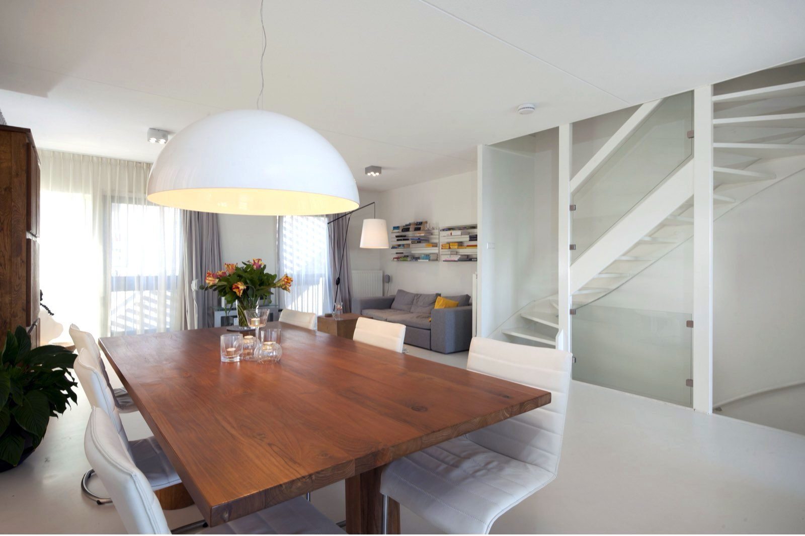
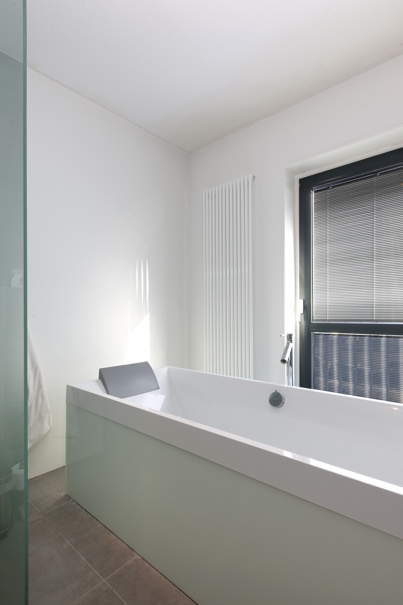
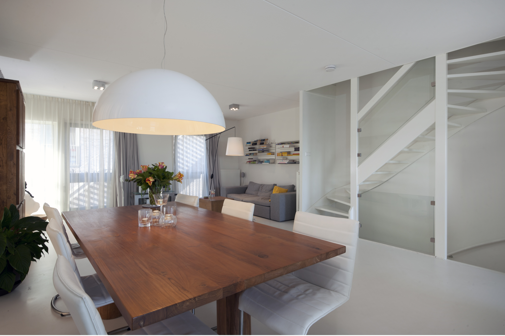
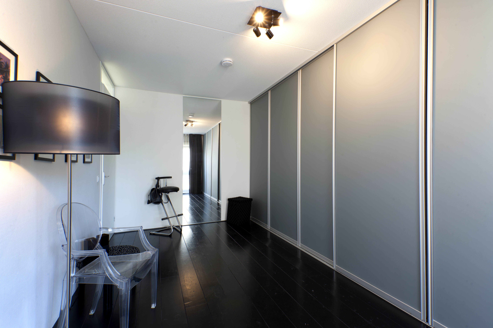

.JPG)



Nieuwbouwhuis Den Haag
In een nieuwbouwwoning die casco werd opgeleverd, hebben wij de badkamer met inloopdouche, de trap, het balkon, de kasten en de binnendeuren met glas op maat gemaakt.
Hoe een casco nieuwbouwhuis moderne accenten kreeg met glas
Glazen trapdelen
In dit nieuwbouwhuis zaten - zoals is de meeste nieuwbouwhuizen - houten spijlen tussen de trappen. Door deze te vervangen door hangende exact op maat gemaakte glazen platen bevestigd met geborsteld RVS klemmen, kreeg de trap meteen een veel modernere designuitstraling. Alle vier de trappen in dit huis hebben zo op maat een moderniseringsslag gegeven die enorm veel effect had op hoe het huis uiteindelijk voelde. Licht en met modern design.

Op maat gemaakte schuifwanden
De eigenaren van het huis wilden over de hele breedte van een kamer een kledingkast. Zij kozen voor een mat metallic glassoort die wij in geborsteld RVS strips en schuifdelen bevestigden waardoor ze heel gemakkelijk open en dicht gleden. Het glas was zo bijzonder dat het eigenlijk in eerste instantie niet als glas herkenbaar was. Het kreeg een industrieel gevoel. Overigens hebben de bewoners deze uit meer dan 50 kleursoorten gekozen. Het mooie was dat letterlijk iedere centimeter van de kamer benut kon worden als kastruimte. De eigenaren hadden zelf een eenvoudig binnenwerk gekocht, maar door de zeer speciale deuren werd de kast een echt designitem.

Design badkamer met glas
Het meeste glas in het huis verwerkten we in de badkamer. De bewoners wilden een vrijstaand bad, maar konden geen bad vinden met een groot genoeg binnenformaat. De standaard losstaande baden waren allemaal heel klein van binnen. Wij hielpen ze met een op maat gemaat bad: zij kochten een standaard inbouwbad en wij bevestigden van wit melkglas daar een badombouw omheen. Verder plaatsten we in de badkamer een inloopdouchewand bevestigd met RVS stangen, maakten we een matglazen schot bij het toilet voor privacy en werkten we samen met de tegelzetter om een verzonken spiegel en legplankjes tussen tegels te maken. Het resultaat was zeer chique alsof je in een dure spa was beland.
Wij geloven in maatwerk en persoonlijk advies.
Het voordeel van ons familiebedrijf is dat je nooit een nummer bent, maar altijd een gewaardeerde klant. Dat betekent dat we de tijd voor je nemen om je te helpen bij het maken van de juiste glaskeuze. Aarzel dan ook niet om contact met ons op te nemen. We helpen je graag!